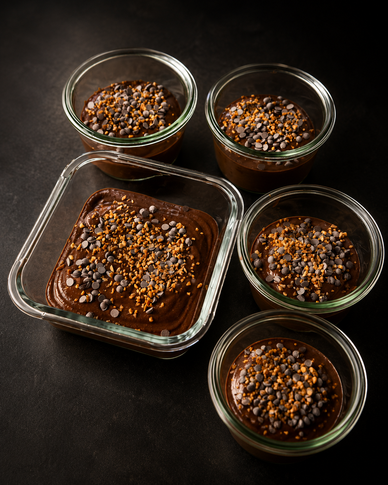

Mousse chocolat aux poires

Ingrédients
- 1 poire conférence (≈180 g)
- 100 g de skyr
- 20 g de cacao non sucré
Préparation
- Couper la poire en morceaux et la placer dans un blender.
- Ajouter les 100 g de skyr et les 20 g de cacao non sucré.
- Mixer le tout jusqu'à obtenir une préparation parfaitement lisse et homogène.
- Verser la mousse dans un bol ou un récipient.
- Placer au réfrigérateur pendant au moins 4 heures afin que la mousse refroidisse et prenne une texture plus ferme.
- Déguster bien frais.
Valeurs nutritionnelles (approx.)
Par portion : 210 kcal • 15 g protéines • 3 g lipides • 34 g glucides